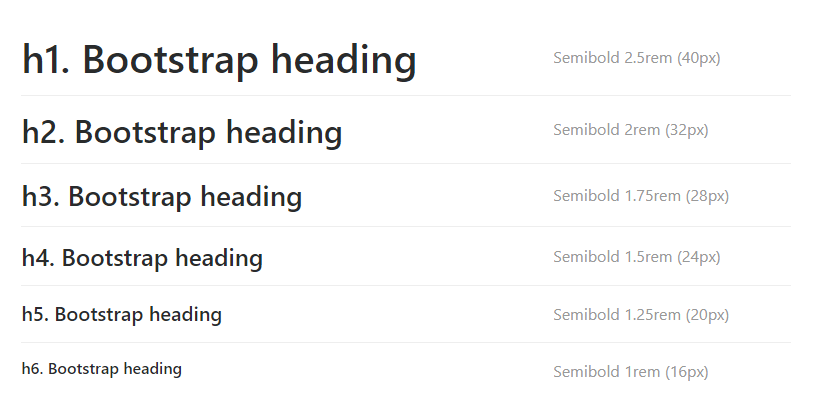
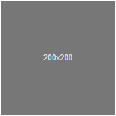

Primer članka
Element article uporabimo za samostojen vsebinski sklop.
Pregled tipografije, slik, kode in tabel z vidika uporabe v Bootstrapu.
Bootstrap poskrbi za osnovni vizualni red tipografije: naslove, odstavke, sezname, poudarke in berljiv razmik med elementi. S tem dobi stran urejeno osnovo, ki jo lahko pozneje prilagodiš lastni grafični podobi.
Razred lead uporabimo za izpostavljen uvodni odstavek.
Razred fw-bold besedilo poudari z debelejšo pisavo.
Naslovni elementi h1 do h6 ostanejo semantični, Bootstrap pa jim doda privzeto velikost, razmik in razmerje med vrsticami. Za dodatno prilagoditev lahko uporabiš utility razrede za velikost, težo pisave in razmike.

Pomembno je, da uporabljaš semantične elemente, kot so main, section, article, nav in footer. Bootstrap jih ne nadomesti, temveč jih lepo dopolni z razredi za videz in postavitev.
Element article uporabimo za samostojen vsebinski sklop.
Za poudarjanje kratkih delov kode je primeren element code, za večje bloke pa pre in code skupaj. To je uporabno v učnih gradivih, dokumentaciji in primerih uporabe razredov.
Razred img-fluid poskrbi, da se slika prilagaja širini nadrejenega elementa in ne preseže razpoložljivega prostora. Dodaten videz dosežemo z zaobljenimi robovi, sencami ali okvirji.

Tabele lahko hitro narediš preglednejše z razredi za obrobe, črtaste vrstice in odzivni ovoj. Posebej pri manjših zaslonih je koristno, da jih ovijemo v element z razredom table-responsive.
| Razred | Namen |
|---|---|
table |
Osnovni videz tabele |
table-striped |
Izmenično obarvane vrstice |
table-hover |
Poudarek vrstice ob prehodu |